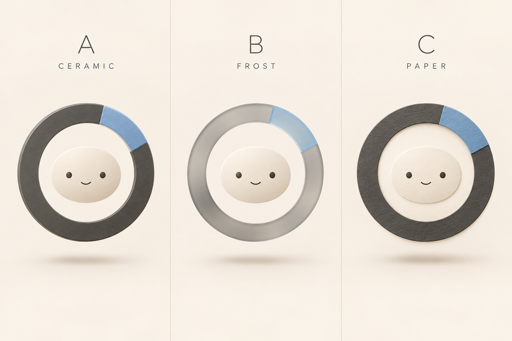

A LITTLE HELP. A LITTLE MORE LIFE.
事情在推进。
你可以松口气。
有点机灵，也有点可爱。
小环帮你照顾琐事，把重要的选择留给你。
嘿，我在这里。
移近一点，我会看向你。也可以轻轻点我一下。
视线跟随 · 轻触回应 · 自然眨眼
LOOPI / 陶瓷小环
自在待机轻轻点我 ↗
LITTLE EXPRESSIONS
有情绪，也有分寸。
点一个表情，看看小环怎么回应。
YOU LEAD. LOOPI HELPS.从忙碌的一天，
从忙碌的一天，
到自己的时间。
圆环里的灰色慢慢接过琐事。
蓝色的那一小段，始终由你决定。
80/20 是协作愿景示意，不代表任务进度或效率承诺。
先告诉我，你想做什么。
说给我听帮你推进由你决定享受生活
这次为什么这样改？ 造型发散与研究依据 ↗
薄陶瓷、磨砂玻璃、层叠纸片三条路线中，选择薄陶瓷：平整正面、浅侧边和少量高光，给表情留下注意力。

生成板仅用于材质发散。可交互角色使用独立 SVG 图层重新绘制，保留圆环缺口与灰蓝身份。眼睛、嘴、脸部核心、外圈分别驱动；脸部没有旋转，双眼基线始终水平。